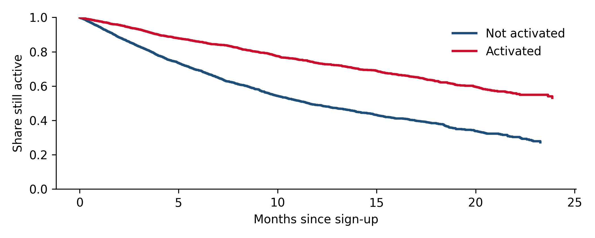

Chapter 16 Churn and survival analysis
How long customers stay, what is associated with staying longer, which of those associations are causal enough to act on, and which customers a retention budget should actually be spent on.
16.1 Churn is a time-to-event problem
“What is our churn rate?” sounds simple and is not, because at any moment most customers have not churned yet. Their lifetimes are censored: we know they lasted at least this long, not how long they will last. Methods that ignore censoring give systematically wrong answers, and the most common mistakes all come from that.
Survival analysis is the toolkit built for this. Its central object is the survival function \(S(t)\), the probability that a customer is still active \(t\) months after joining, and its companion the hazard, the probability of leaving at \(t\) given survival until then.
16.2 Worked example: the cost of ignoring censoring
We simulate 6,000 business customers who joined over the past 24 months. Each has an unobserved level of intent (how much they need the product), which lowers their risk of leaving. Customers with higher intent are also more likely to activate (complete onboarding and start using the product in earnest), and activation itself also reduces churn, but by less than it appears. Some customers are on a pro plan, which reduces churn too. Observation stops today, so recent joiners have short, censored histories.
import numpy as np, pandas as pd, warnings
warnings.filterwarnings("ignore")
from statsmodels.duration.survfunc import SurvfuncRight, survdiff
from statsmodels.duration.hazard_regression import PHReg
rng = np.random.default_rng(16)
n = 6_000
intent = rng.normal(0, 1, n) # unobserved
activated = (rng.random(n) < 1 / (1 + np.exp(-(-0.2 + 1.4 * intent)))).astype(int)
pro = (rng.random(n) < 0.3).astype(int)
joined = rng.integers(0, 24, n) # month of sign-up
TRUE_HR = {"activated": np.exp(-0.3), "pro": np.exp(-0.5)}
hazard = 0.05 * np.exp(-0.5 * intent - 0.3 * activated - 0.5 * pro) # monthly hazard
lifetime = rng.exponential(1 / hazard) # months until churn
observed_for = 24 - joined
time = np.minimum(lifetime, observed_for)
churned = (lifetime <= observed_for).astype(int)
df = pd.DataFrame({"time": time, "churned": churned, "activated": activated, "pro": pro})
km = SurvfuncRight(df["time"], df["churned"])
print(f"Share of customers who have churned so far: {churned.mean():.0%}")## Share of customers who have churned so far: 38%## Average lifetime of churned customers: 6.5 months## Kaplan-Meier median lifetime: 17.7 months## True median lifetime (unobservable): 17.2 monthsBoth naive numbers are wrong. “Share churned so far” depends on how recently customers joined, not just on how long they stay. “Average lifetime of churned customers” only counts those who already left, who are by construction the short-lived ones; it understates lifetime by more than half. The Kaplan-Meier estimator uses every customer for as long as they were observed and recovers the true median.
16.3 Comparing groups
Kaplan-Meier curves by group are the first thing to look at. Here, activated versus not activated:
import matplotlib.pyplot as plt
fig, ax = plt.subplots(figsize=(7, 2.8))
for a, label in [(0, "Not activated"), (1, "Activated")]:
s = SurvfuncRight(df.loc[df.activated == a, "time"], df.loc[df.activated == a, "churned"])
ax.step(s.surv_times, s.surv_prob, where="post", lw=2, label=label)
ax.set_xlabel("Months since sign-up")
ax.set_ylabel("Share still active")
ax.set_ylim(0, 1)
ax.legend()
plt.tight_layout()
plt.show()
Figure 16.1: Kaplan-Meier survival curves by activation status.
stat, p = survdiff(df["time"], df["churned"], df["activated"])
print(f"Log-rank test: chi2 = {stat:.0f}, p {'< 0.001' if p < 0.001 else f'= {p:.3f}'}")## Log-rank test: chi2 = 339, p < 0.001The gap is large and unmistakably real. The question that matters for the business is a different one: if we get more customers to activate, by how much will churn fall?
16.4 Cox regression, and why its hazard ratios are not effects
The Cox proportional hazards model relates the hazard to customer characteristics. Each coefficient becomes a hazard ratio: a hazard ratio of 0.7 means the risk of leaving at any given time is 30% lower.
def hazard_ratios(cols):
fit = PHReg(df["time"], df[cols], status=df["churned"]).fit()
ci = np.exp(fit.conf_int())
return pd.DataFrame({"HR": np.exp(fit.params), "95% low": ci[:, 0], "95% high": ci[:, 1]}, index=cols)
hr = hazard_ratios(["activated", "pro"])
hr["true causal HR"] = [TRUE_HR["activated"], TRUE_HR["pro"]]
print(hr.round(2).to_string())## HR 95% low 95% high true causal HR
## activated 0.44 0.41 0.48 0.74
## pro 0.68 0.61 0.75 0.61##
## With the confounder included:## HR 95% low 95% high
## activated 0.71 0.64 0.78
## pro 0.67 0.61 0.73
## intent 0.61 0.58 0.64The Cox model says activation cuts the hazard by more than half, with a tight interval. The true causal effect is a reduction of about a quarter. The difference is confounding, in exactly the sense of Chapter 3: customers who need the product more both activate more and stay longer, and the model credits activation with part of the effect of need. When the confounder is included (possible here only because we simulated it), the estimate falls back to the truth. The pro plan estimate is close to the truth, because plan choice was independent of intent in this simulation; in real data it rarely is. (It is slightly attenuated even so: omitting a strong predictor pulls Cox hazard ratios toward 1 even when it is unrelated to the feature, a property known as non-collapsibility.)
This matters because activation is a lever. A team that reads the observational hazard ratio will forecast a churn reduction twice as large as an onboarding improvement can deliver. The way to measure the causal effect of activation is to randomize something that changes activation (an onboarding flow, a nudge sequence, a setup call) and measure retention by cohort over a horizon long enough for churn to show (Chapter 5).
Reading hazard ratios from a churn model as the effect of changing that feature. Features such as activation, product usage, number of integrations or support contacts are partly symptoms of customer need. Their association with retention overstates what pushing them will achieve.
16.5 Predicting churn versus preventing it
Churn prediction models (logistic regression, gradient boosting, survival models) answer “who is likely to leave?”. Retention budgets need a different answer: “whose decision to leave will our intervention change?”. Those are not the same people.
- Lost causes: very high risk, will leave whatever you do.
- Sure things: low risk, will stay whatever you do.
- Persuadables: the customers whose behavior the offer changes, often at moderate risk.
Targeting the highest predicted risk spends most of the budget on lost causes. Targeting by uplift, the estimated difference the intervention makes for each customer, requires an experiment: randomly give the offer to some customers and not others, then model the difference.
16.5.1 Worked example: risk targeting versus uplift targeting
20,000 customers are in a randomized retention test: half receive an offer. Each customer’s 90-day churn risk depends on three features, and the offer’s effect is largest for customers at moderate risk. The budget allows the offer to go to 20% of the base in future. We compare four ways of choosing that 20%.
from sklearn.linear_model import LogisticRegression
N = 20_000
X = np.column_stack([rng.normal(0, 1, N), rng.normal(0, 1, N), rng.poisson(2, N)])
p0 = 1 / (1 + np.exp(-(-1.7 + 1.1 * X[:, 0] - 0.8 * X[:, 1] + 0.35 * X[:, 2]))) # churn risk, no offer
tau = 0.5 * p0 * (1 - p0) # true churn reduction from the offer
offer = rng.random(N) < 0.5 # randomized test
churn = rng.random(N) < np.where(offer, p0 - tau, p0)
F = np.column_stack([X, X ** 2])
m_control = LogisticRegression(max_iter=2000).fit(F[~offer], churn[~offer])
m_offer = LogisticRegression(max_iter=2000).fit(F[offer], churn[offer])
risk = m_control.predict_proba(F)[:, 1]
uplift = risk - m_offer.predict_proba(F)[:, 1] # two-model ("T-learner") uplift estimate
k = int(0.2 * N)
rows = []
for name, score in [("Random 20%", rng.random(N)), ("Highest predicted risk", risk),
("Highest predicted uplift", uplift), ("Oracle (true uplift)", tau)]:
top = np.argsort(-score)[:k]
rows.append({"targeting": name, "customers saved": round(tau[top].sum()),
"avg risk of targeted": round(p0[top].mean(), 2)})
print(f"Average 90-day churn risk without offer: {p0.mean():.0%}")## Average 90-day churn risk without offer: 33%## customers saved avg risk of targeted
## targeting
## Random 20% 323 0.33
## Highest predicted risk 383 0.72
## Highest predicted uplift 480 0.48
## Oracle (true uplift) 491 0.49Targeting the highest-risk customers beats random selection, but only modestly: it concentrates the budget on people whose average risk is above 70%, many of whom leave regardless. Targeting by estimated uplift saves about a quarter more customers with the same budget, by aiming at customers of moderate risk, and comes close to the oracle that knows each customer’s true response. In businesses where the highest-risk customers are truly lost causes, risk targeting can do worse than random. The uplift model needed nothing exotic: two logistic regressions fitted on the randomized test. What it did need was the randomized test.
16.6 Practical notes
- Define churn precisely. For subscriptions, cancellation or non-renewal. For usage-based products, a period of inactivity (for example, no transactions for 90 days), chosen so that few customers who pass it ever come back.
- Check proportional hazards. Cox models assume each feature’s effect is constant over time. Activation, for instance, often matters a lot early and little later; plotting scaled Schoenfeld residuals or fitting separate models for early and late tenure reveals this.
- Separate voluntary and involuntary churn. Failed payments and compliance closures have different drivers and different fixes from customers choosing to leave.
- Measure retention interventions with holdouts and long horizons. A retention offer that delays churn by a month looks like a success at 30 days and a cost at 120.
16.7 Checklist
- Are churn and lifetime estimated with methods that handle censoring (Kaplan-Meier, Cox, parametric survival), not averages over churned customers?
- Is the churn definition explicit and stable, with voluntary and involuntary churn separated?
- Are hazard ratios presented as associations unless the feature was randomized?
- Are retention offers targeted by uplift from a randomized test, rather than by predicted risk?
- Is the effect of retention interventions read at a horizon long enough to distinguish prevention from delay?
16.8 Further reading
- Kaplan-Meier survival analysis in Python.
- CausalML (Uber) and EconML (py-why) for uplift and heterogeneous treatment effect models.
Full links are in Appendix A.